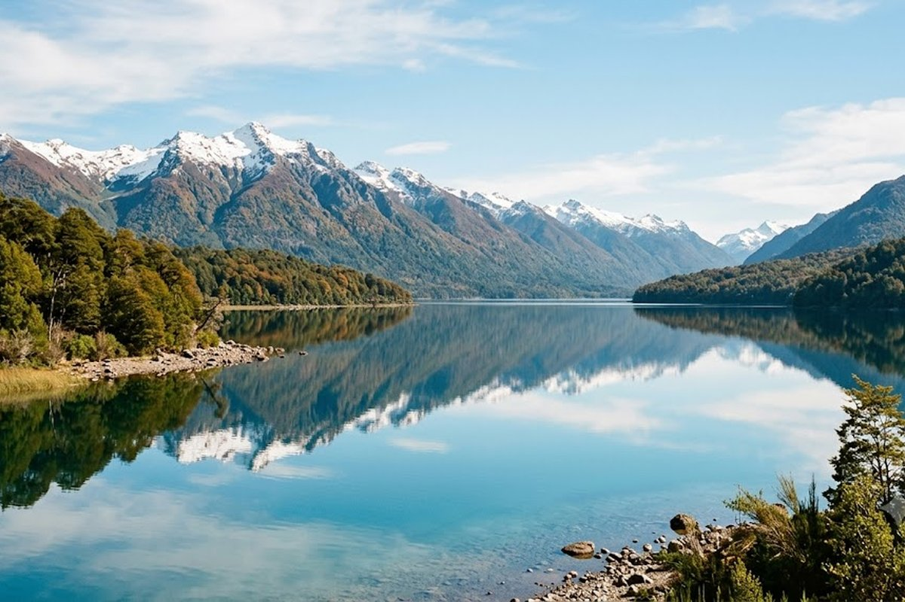
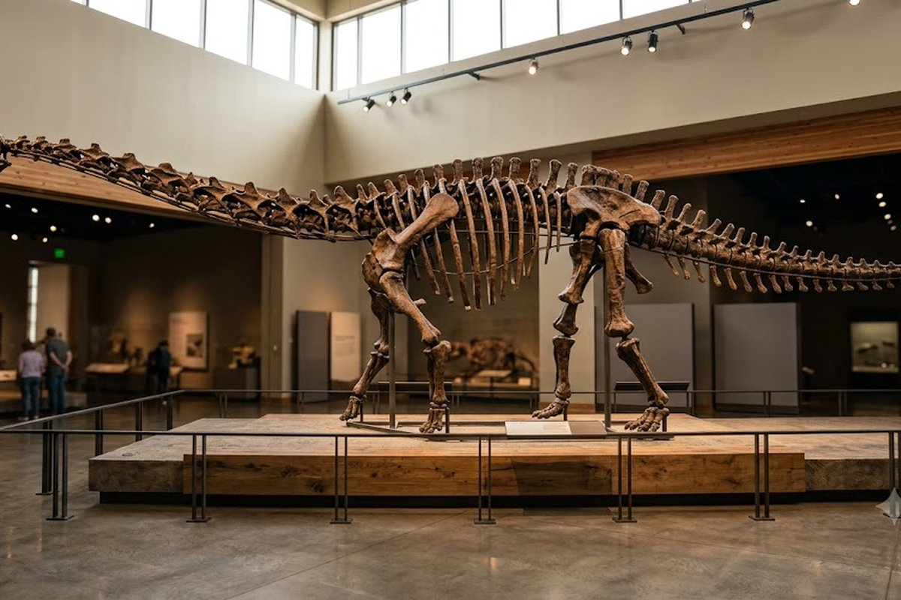
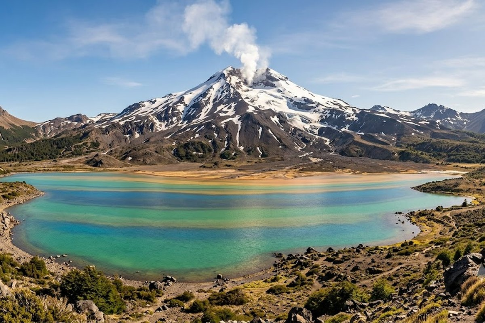
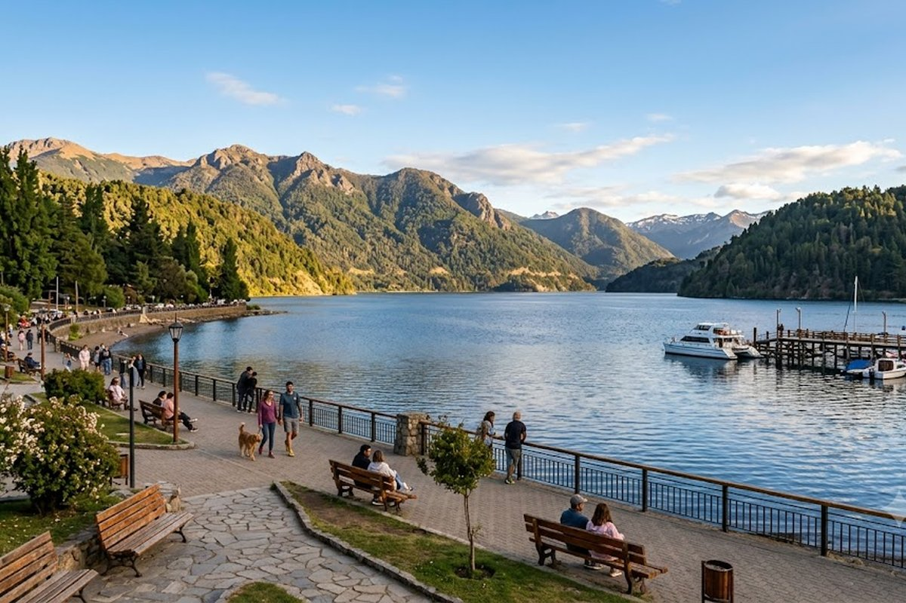

Dinosaurios más grandes que los T-Rex, lagos patagónicos, la Ruta de los 7 Lagos y los vinos más australes del mundo. El secreto mejor guardado del sur.
Neuquén es mucho más que la ciudad capital. La provincia más grande y diversa de la Patagonia tiene dinosaurios más grandes que el T-Rex (el Patagotitán mayorum, el animal más grande que existió en la Tierra), la Ruta de los 7 Lagos, los mejores vinos patagónicos del país y una naturaleza tan vasta que todavía hay zonas sin explorar. Y todo esto a menos de 2 horas de vuelo desde Buenos Aires.



El museo al aire libre más importante del mundo: huellas de dinosaurios in situ en la costa del lago Ezequiel Ramos Mexía y el fósil del Giganotosaurus carolinii.
El animal más grande que habitó la Tierra fue descubierto acá. El museo tiene el esqueleto completo del Patagotitán mayorum — 37 metros de largo.
El recorrido escénico más famoso de la Patagonia conecta San Martín de los Andes con Villa La Angostura pasando por 7 lagos de colores increíbles.
Las bodegas del Alto Valle del Río Negro y Neuquén producen Pinot Noir y Malbec de altura que compiten con los mejores del mundo.
El centro de esquí de San Martín de los Andes, con vista al volcán Lanín. Más tranquilo que Bariloche y con nieve de excelente calidad.
El lago de aguas turquesas junto al volcán Copahue y las termas naturales de Copahue — uno de los secretos mejor guardados de la Patagonia.
La mayoría de los turistas que visitan la Patagonia norte (San Martín, Angostura, 7 Lagos) no saben que están en Neuquén — y que a 4 horas está uno de los destinos más únicos del mundo: los dinosaurios de Plaza Huincul. Si tu circuito incluye la zona de Lagos, agregá medio día para los dinosaurios — es un desvío que no te arrepentís.
Neuquén + Bariloche: El combo perfecto de la Patagonia norte. San Martín de los Andes y Villa La Angostura son provincias Neuquén, y conectan perfectamente con Bariloche (Río Negro) por la Ruta de los 7 Lagos. Un circuito de 7-8 días lo cubre todo.
¿Neuquén ciudad o la zona de Lagos?
Depende de lo que buscás. La ciudad de Neuquén es el hub logístico — la mayoría vuela ahí y se mueve al interior. La zona de Lagos (San Martín de los Andes, Angostura, 7 Lagos) es el destino turístico principal. Los dinosaurios están a 1 hora de la ciudad.
¿Tiene dinosaurios de verdad?
Sí, y de los más importantes del mundo. En Plaza Huincul se descubrió el Patagotitán mayorum — el animal más grande que habitó la Tierra (37 metros). En Villa El Chocón hay huellas de dinosaurios in situ en la costa del lago. Son únicos en el mundo.
¿Se puede combinar con Bariloche?
Perfectamente. San Martín de los Andes (Neuquén) y Bariloche (Río Negro) están conectados por la Ruta de los 7 Lagos — uno de los recorridos más bellos de la Patagonia. El circuito natural es entrar por uno y salir por el otro.
¿Es un destino conocido o más "secreto"?
Es un destino que los argentinos están descubriendo. Fuera de Neuquén y Río Negro, poca gente sabe que los dinosaurios más grandes del mundo están en la Patagonia argentina. Eso lo hace especialmente interesante — vas a lugares sin las multitudes de Bariloche o Ushuaia.
Armamos tu circuito neuquino con todo incluido.
💬 Consultar con Gemicheck